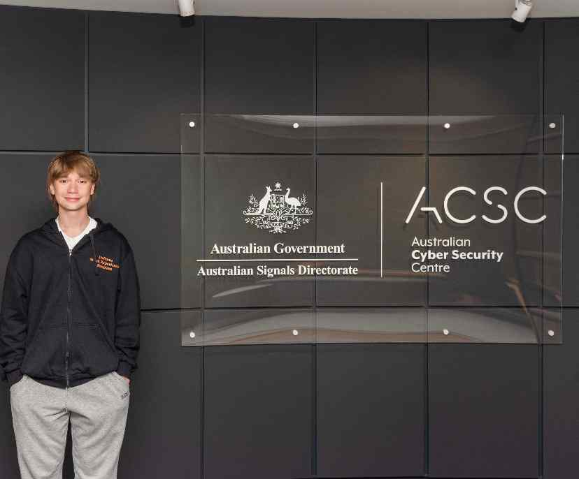
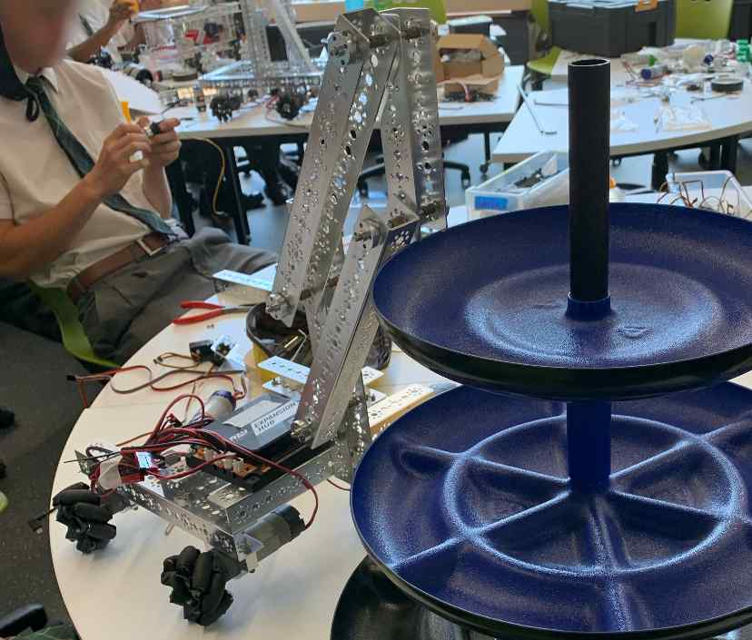

My Experience
Cybersecurity
I have been interested in cybersecurity since I was very young. I started when I was 12 through youtube, online writeups and free online courses, and used my knowledge to do a couple of beginner and intermediate level CTF's. After I started to learn more and improve my skills I began working on slightly more reallistic challenges, such as hack the box, and developing cheat software for games such as CS:GO (c++) and Minecraft (Java) with user interfaces, learning about memory, security, and how to reverse engineer code. I also got some experience working on attacking web servers through both my Dad's old hardware, and various online challenges, CTF's and simulated machines. I was lucky enough to attend a fully payed for trip to canberra for the ADF cybersecurity and robotics work experience program, which was a great oppurtunity to gain experience and see what its like to work in the field. When I was 17, I ended up enrolling in the OSCP program, I got through and loved all the course work, however unfortunately, my exam had to be scheduled around my HSC and I decided to study rather than complete the exam and earn my cert. I especially love breaking into my friends laptops and instagram accounts to play tricks on them, with their permission of course!
Programming
I have been lucky enough to own computers from a young age, and as a result of the hardware I've had access too, and my love for computers in general, I've been able to develop my skills in programming over the years. I currently am familiar with Java, Python, I've done some stuff in C++, I'm trying to learn C, and ofcourse I know HTML JS and CSS. As part of my highcshool education, and also as a hobby, I've also created a number of projects which im particularily proud of. I created a maze solver using Bresenham's line algorithm and route optimisation. It's a website that will take an image (either downloaded or taken with a camera) of a maze, allow the user to enter start and end points, and then it will draw a solution line onto the image and allow the user to save it. I have also made a social media platform from scratch, which uses nodejs to host a server, allowing users to sign up/log in, view other active nearby users on a map, post, like, message and friend other users. This project taught me a lot about the concepts of databases, networking and data security, as I had to create the framework for storing, transmitting and displaying information only using default nodejs, as well as creating a client-server model to help share users locations with eachother efficiently. Among other smaller projects, I have worked on LAN socket networking in an online python game (again using a server-client model), and AI in a poorly trained python AI chatbot, with an acompanied animated smiley face, voice recognition, and text to speech.
Robotics/Electronics
My love for robotics was mainly started by my participation in my highschool robotics team, who participated in the FIRST FTC robotics competition. I was responsible for programming and electronics. Although the complexity of these tasks was limited due to the rules of the challenge and the tech our school used/owned, it nevertheless helped me realise that robotics was something I loved doing. I was responsible for hooking up motors, sensors, servos and other electronics, writing firmware for them, and making them run according to wireless input from a controller, or autonomously depending on which part of the competition the robot was competing in. Doing robotics broadened my horizons from computing to electronics, and I began exploring breadboards and arduinos to create little gadgets. My favourite of which was when I created a really simple circuit that would light up a series of LED's to display how high someones blood alcohol level was using an eeprom and a breathalyser module, which I stuffed into a replica of a Rick and Morty portal gun which I modelled and printed myself to perfectly house my circuit. Im also in the middle of building a robot arm with an arduino, and making a ham radio from scratch, with VERY limited progress.
| Cybersecurity | Programming | Robotics/Electronics |
|---|---|---|
| $_  |
</>

|
0x  |